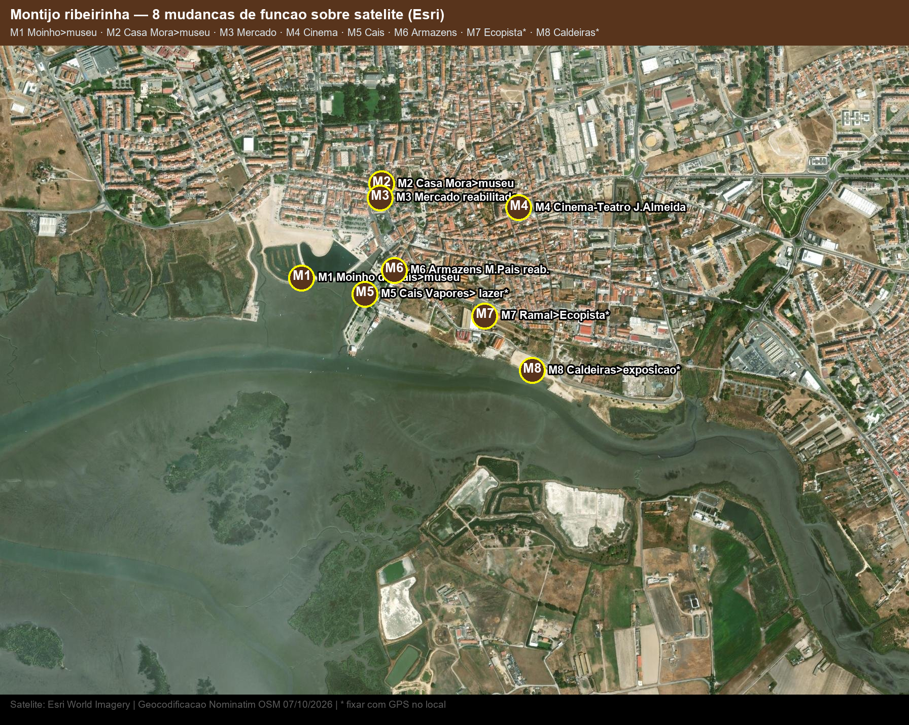

Ideia para o projeto: o Montijo já testou quase todos os graus de reconversão — do museu integral (Moinho, Casa Mora) à requalificação de espaço público (passeio, ecopista) e à reconversão em curso (Cais, Caldeiras). Usa estes 8 como precedentes: o que manter, o que abrir, o que subir de cota.
1. Antes → agora (por nº de satélite)
| # | Edifício | Antes | Agora | Coord. | Base |
|---|---|---|---|---|---|
| M1 | Moinho de Maré do Cais — séc. XIII/XIV, ref. 1646 | Moagem a maré (5–6 rodízios); abandono séc. XX, ruína | Propriedade municipal 1995; museu restaurado 2005–06; único no Tejo com mecanismos primitivos | 38.70356, -8.97955 | Nominatim/CM |
| M2 | Casa Mora — Av. Pescadores 52, ~1875 | Habitação burguesa (Domingos Tavares); eclética, estuques/frescos | Comprada 80s p/ Biblioteca Manuel Giraldes da Silva; desde 1993 Museu Municipal | 38.70667, -8.97617 | Nominatim/CM |
| M3 | Mercado Municipal — Praça Gomes Freire Andrade | Mercado tradicional | Reabilitado (programa municipal de reabilitação); âncora de comércio local | 38.70621, -8.97624 | Nominatim/CM |
| M4 | Cinema-Teatro Joaquim d'Almeida — R. Joaquim Almeida, 1957 | Praça de Touros em madeira na R. Miguel Pais (at. Joaquim Almeida 1838–1921) | Cinema-teatro desde 06/11/1957; polo cultural (a ~400 m do rio) | 38.70588, -8.97037 | Nominatim/CM |
| M5 | Cais dos Vapores — terminal fluvial | Terminal Transtejo; devoluto | Protocolo APL→CM 11/06/2025; em reconversão: lazer + náutica + restauração (unanimidade mar 2026) | 38.70302, -8.97687 | Nominatim/CM |
| M6 | Armazéns R. Miguel Pais / José Sousa Rama | Armazéns + antiga estação ferroviária | Requalificados 2006–07 no passeio ribeirinho Moinho–Cais; R. Miguel Pais prolongada como “Passeio do Cais” | 38.70381, -8.97563 | Nominatim/CM |
| M7 | Ramal Pinhal Novo–Montijo (1908–1989) → Ecopista | Ferrovia de mercadorias/passageiros da indústria | Montijo Ciclável: reconversão da linha em ecopista/ciclovia (projeto municipal) | 38.70230, -8.97180 | aprox. |
| M8 | Edifício das Caldeiras Mundet — Bela Vista | Cozer cortiça da Mundet (1923–88) | Exposição longa duração “A cortiça: matéria-prima…” desde 2025; restante fábrica por reconverter | 38.70050, -8.96980 | aprox. |
Fontes: CM Montijo (Moinho do Cais; Casa Mora; Cinema-Teatro; projetos “Montijo Ciclável”, “Requalificação Rua Miguel Pais – Cais”, “Mercado”, “Casa da Música”); protocolo APL-CM Cais 11/06/2025 (PDF CM); ADN/SAPO/Rostos/O Cidadão mar–jun 2025; AMRS Rede Património (Caldeiras 2025); tese ULisboa Folgado (armazéns/estação requalificados, 2 fábricas devolutas propostas p/ hotel); RTCP/e-cultura (Cinema-Teatro).

Imagem estática Esri zoom 16. M-nºs no PNG = tabela + mapa interativo. “Aprox.” (M7/M8) = eixo do ramal e núcleo Bela Vista — fixar com GPS e cadastro.
2. O que cada caso ensina ao desenho
| Caso | Estratégia que resultou | Levar para o teu projeto |
|---|---|---|
| M1 Moinho → museu | Restauro tipológico (caldeira + engenhos) + requalificação envolvente; energia do sítio vira programa | Não esconder a máquina: corte maré–caldeira–engenho como centro do espaço |
| M2 Casa → biblioteca → museu | Uso cultural compatível com compartimentação burguesa; estuques/frescos mantidos | Em habitação histórica, programa público leve preserva mais do que habitação profunda |
| M5/M6 Cais + armazéns → passeio | Espaço público primeiro (2006–07), edifício depois; R/C permeável à maré | Fasear: âncora náutica/restauração no Cais e estender a nascente por quarteirões-piloto |
| M7 Ramal → ecopista | Infraestrutura vira conector verde em vez de barreira | Usar o ex-ramal como alameda/ciclável que cose rio–estação–fábrica (corredor ecológico ARU/PEZOR) |
| M4 Touros → cinema / M8 Caldeiras → exposição | Mudança de uso sem mudar o invólucro; estrutura e vãos reutilizados | Nas naves Mundet/SAPAC: dividir em arrendatários menores (ateliers/serviços) em vez de demolir |
3. Cruzamento abandonados × mudados (onde intervir)
- Consolidado a copiar: M1–M2–M3–M4–M6 (oeste + centro) — já funcionam; rematar com sinalética e cotas de cheia.
- Em curso — oportunidade de projeto: M5 Cais + M8 Caldeiras + nºs 2–5 (faixa Mundet/SAPAC/José Mundet) — é aqui que o projeto pode propor o encadeamento hotel/ateliers/serviços já sugerido na tese ULisboa.
- Delicado — confirmar antes de desenhar: nºs 6 (forno, maré) e 8 (Lançada, acesso + maré) e M7 (cadastro da linha).
Enquadramento: ARU 274 ha (núcleo + marginal nascente + corredor Assentas–Esteval); PEZOR 267 ha (Seixalinho–Lançada); PDM 1997 em revisão. Usar PDF oficial CM para limites.